Locus
Brand Identity
Locus Kitchen & Bar and Cafe Locus are a restaurant and cafe in Coimbatore, built on one idea: Right here, right now. A place where people feel at home while still feeling free. Cafe Locus brings this to life with terracotta tiles, paper lamps and plants.
I shaped an earthy identity connected to the interiors and the concept, and carried it through everything a guest sees and touches: menus, coasters, cake boxes, butter paper, wall art and signage.

Logo

In the space
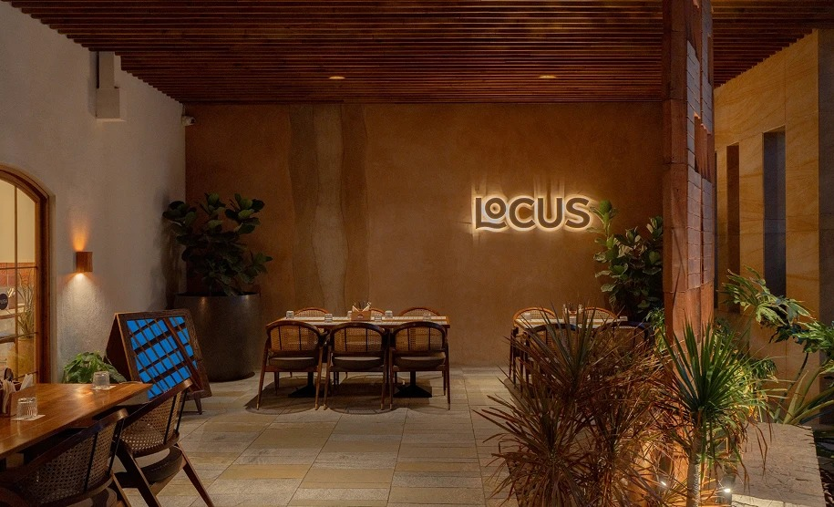
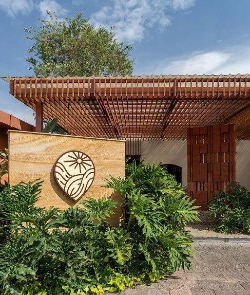
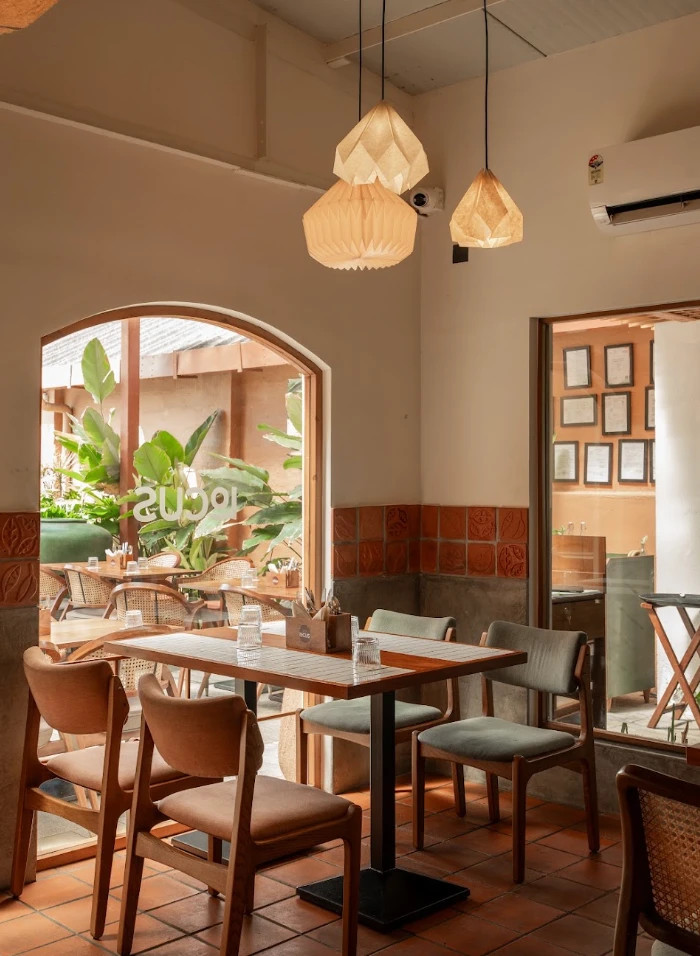
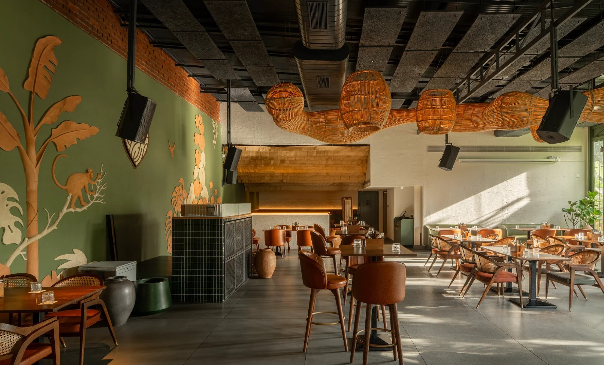
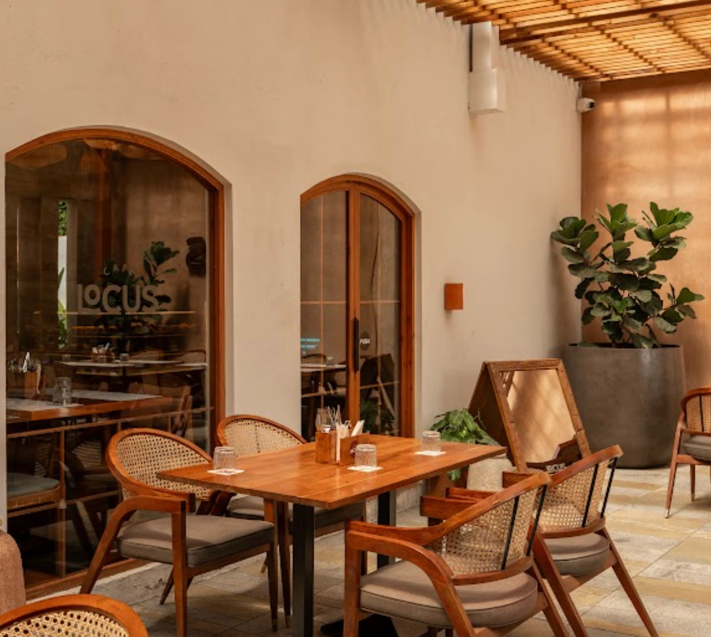
Menus
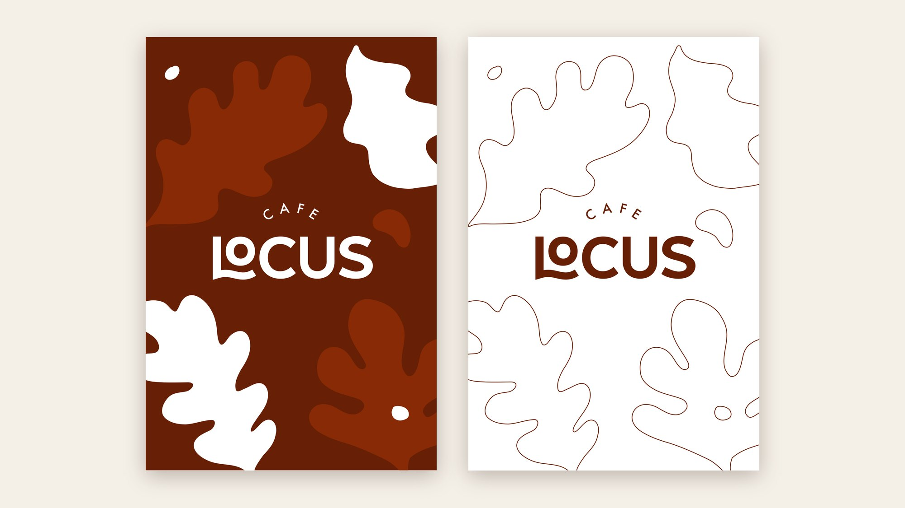
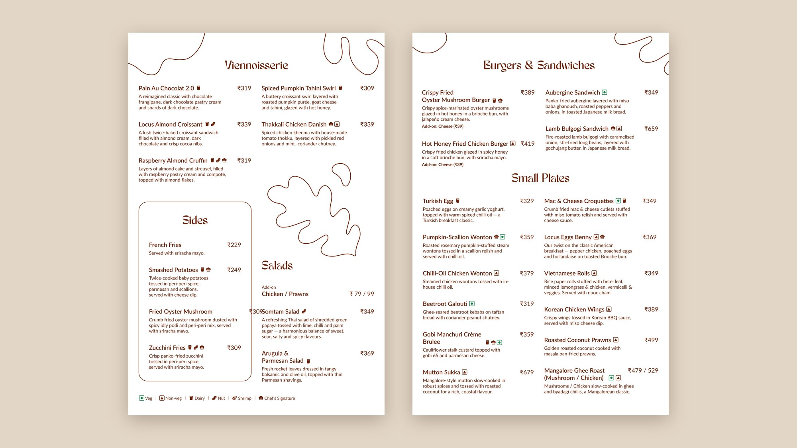
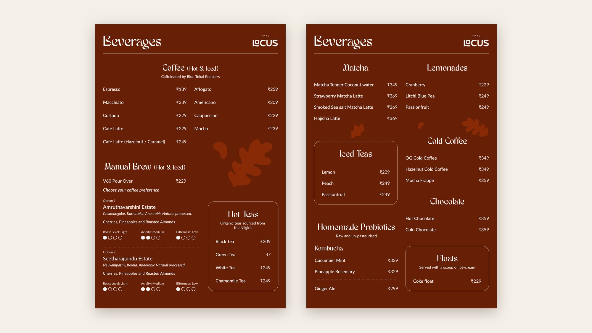
Print and packaging
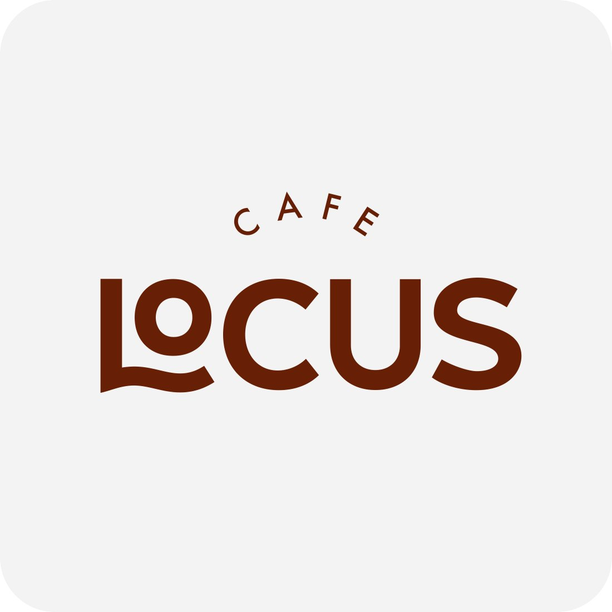
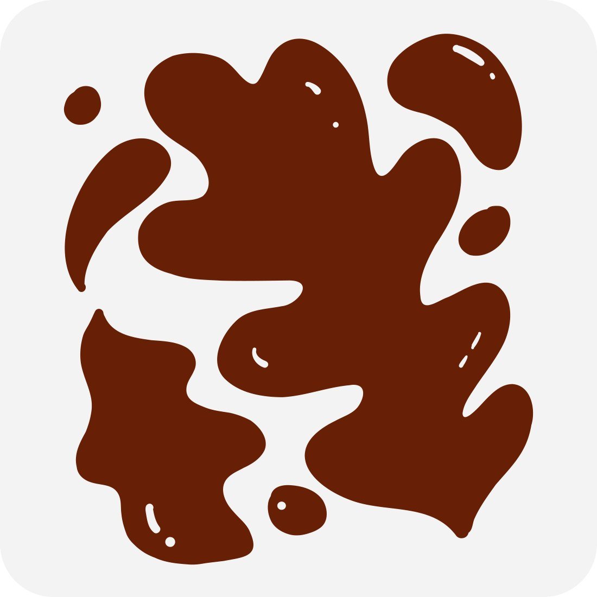
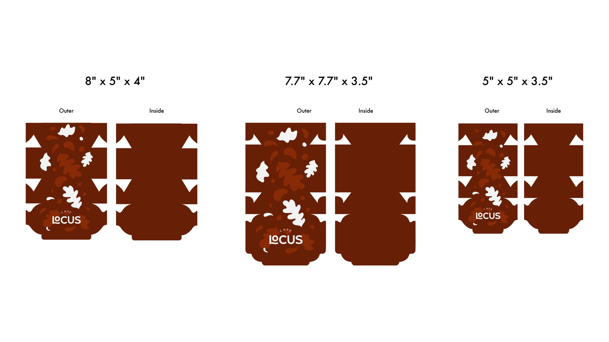
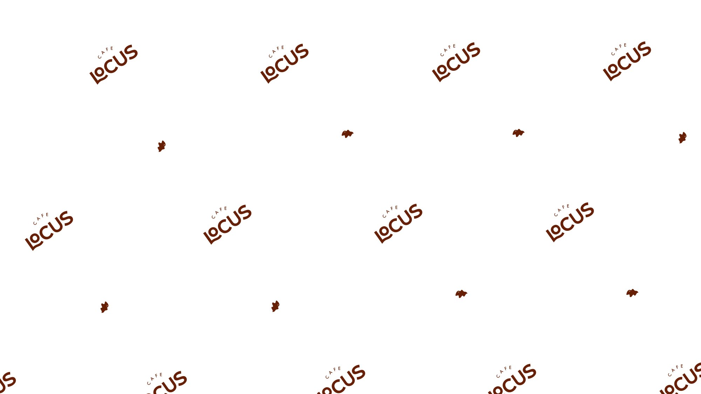